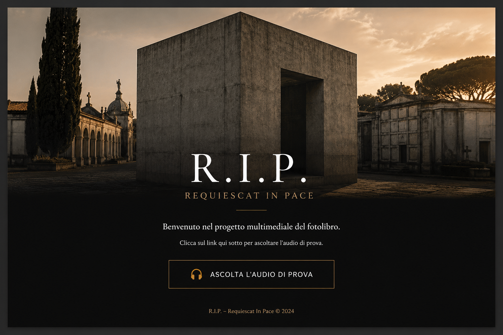

R.I.P. · Requiescat In Pace
Il cubo
CAPITOLO 01
Inquadra il QR Code nel fotolibro per ascoltare l'audio durante la lettura.
Ascolta il capitolo
La riproduzione parte quando premi Play.
È necessaria una connessione Internet.